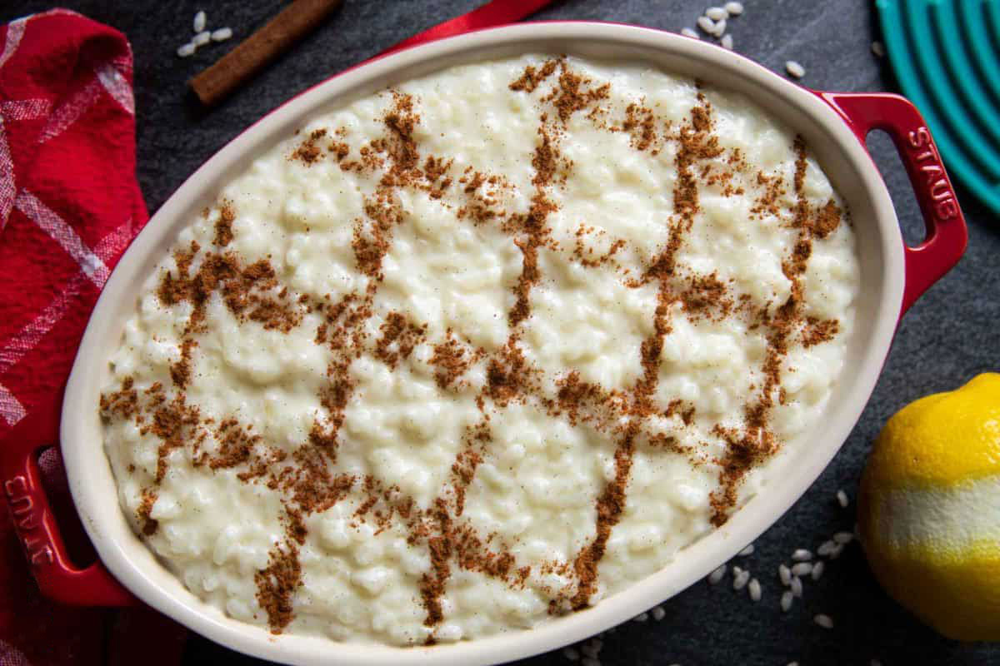

A canjica é uma sobremesa feita de grãos de milho mergulhados em um caldo de leite de coco, leite,
canela, cravo e outras especiarias.
Com várias receitas e nomes ao redor do Brasil, ela pode ser apreciada de diversas maneiras, seja
como prato doce ou salgado,
mas é a canjica doce a mais cobiçada nas festividades de São João. Para saber mais sobre ela,
leia este texto cheio de informações interessantes e receitas de canjica cremosa de dar água na
boca.
Ingredientes
Milho branca 500g
Leite de coco 200ml
1 caixa de leite condensado (caixa de 395g)
Coco ralado flocos 100
1 litro de leite
cravos e canelas a gosto
Canela em pau
Açúcar 300
Modo de preparo
Coloque a canjica de molho de um dia para o outro (ou no mínimo 12 horas).
Depois de deixar de molho, lave-as e coloque na panela de pressão junto com a água, os cravos e as canelas e o açúcar,
deixe no fogo até ficar mole, por 30 minutos.
Após isso, desligue o fogo e deixe a pressão sair.
Quando sair, coloque o leite condensado, o leite, o coco e deixe cozinhar por 20 minutos.
Video de preparo Canjica
2. Arroz Doce

Resumo
O arroz doce é uma receita de origem asiática. Na Índia, por exemplo, é comum encontrar arroz com
açúcar em preparações de pratos típicos dos casamentos hindus.
Na Tailândia, ele leva coco e é servido com fatias de manga e pouquíssimo açúcar. O arroz doce
acabou chegando à Europa por volta do século XIII.
Depois, aportou em terras brasileiras via Portugal. Aqui ele chegou polvilhado com canela.
Na época do Império, no Rio de Janeiro, as pessoas ricas, amaioria de origem portuguesa,
faziam vários pratos da terrinha e uma de suas sobremesas preferidas era justamente o arroz doce. No Brasil,
o arroz doce adquiriu ainda outras variações, como o uso do leite condensado, que lhe conferiu mais sabor e doçura!.
Ingredientes
Arroz branco 500g
Agua 1000l
Casca de limão
Açucar 250g
1 canela em pau
Leite 500ml
Modo de preparo
Coloque o arroz para cozinhar com açucar, canela e a casca de limão.
Depois de secar coloque o leite e deixe reduzir 1/3.